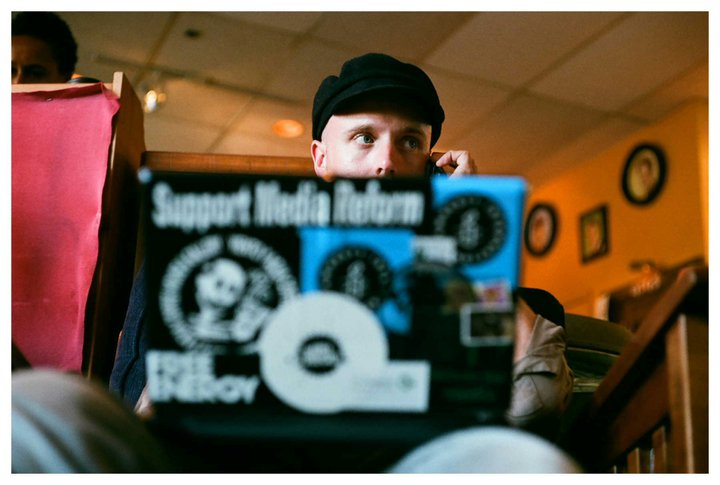

Bridge of Death is a timed trivia game designed to resemble a role-playing game from the 8-bit era. It is themed after a scene from Monty Python and the Quest for the Holy Grail.
The player can lose in two ways: let the time elapse without answering, or by answering a question incorrectly. There is only one real way to win: Get King Arthur across alive.
Peter coded the game in HTML, CSS and JavaScript/jQuery from scratch; no frameworks such as Bootstrap.
The art is not original. Peter took screen shots of the movie and used Adobe Photoshop to give the images a pixelized look with only 54 colors, exactly as they would have appeared on a Nintendo Entertainment System. The music and sounds were borrowed from a public domain resource.